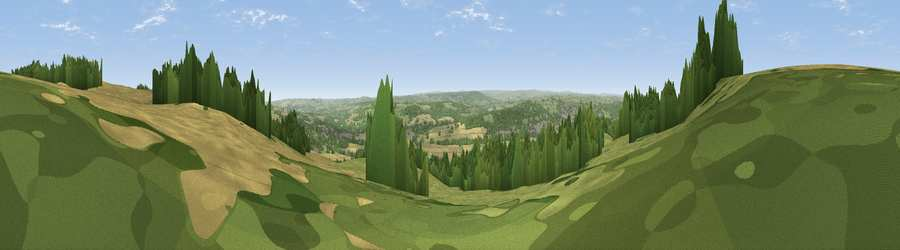

Viewpoint near Oakwood
#7216 in England · top 8% of its area beats it · near OakwoodThe view, rendered

A 360° render of this exact spot computed from the terrain model, tree cover and land cover — summer colours, afternoon light, calibrated against photographs of famous viewpoints. Real trees, hedges and buildings will differ in detail.
The panorama
Grey silhouette: terrain skyline in each direction (720 bearings, Earth curvature and refraction included). Dashed green: skyline with trees (+15 m) and buildings (+8 m) as obstacles. Blue strip: how far the ground is visible on each bearing.
Where the view opens
Wedge length = distance to the farthest visible ground on that bearing (vegetation-aware). Rings at 10, 25 and 50 km.
What fills the view
44% grassland · 27% woodland · 24% cropland · 4% built-up ·
Angular shares of the visible panorama (visual magnitude), not map area. Landscape diversity 0.53 (0–1 Shannon).
Key numbers
More beautiful places nearby
The staircase of upgrades: each row has a higher view potential than everything closer. Driving times are estimates from straight-line distance, calibrated against real road routing — check an actual route before setting out.
| Place | Direction | Drive | Score |
|---|---|---|---|
| Viewpoint near Chollerford | NW · 3 km | ~8 min | 67.5 |
| Viewpoint near Fourstones | W · 6 km | ~14 min | 71.4 |
| Viewpoint near Hedley on the Hill | ESE · 15 km | ~27 min | 71.5 |
| Viewpoint near Greenside | ESE · 16 km | ~29 min | 74.2 |
| Pontop Pike | SE · 23 km | ~38 min | 77.8 |
| Viewpoint near Thropton | N · 32 km | ~50 min | 81.8 |
| Dove Crag | NNE · 32 km | ~50 min | 82.3 |
| Viewpoint c12273_7856 | N · 47 km | ~67 min | 83.7 |
54.99644, -2.05194 · source: screening · position refined by local search. Computed location — check access rights before visiting.